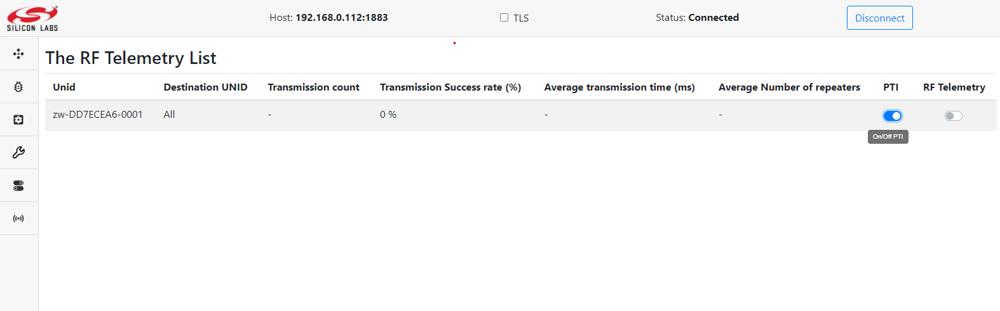
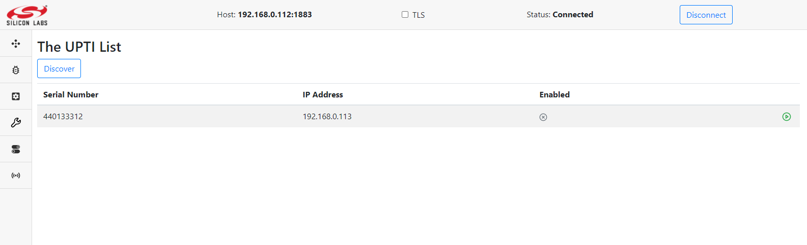
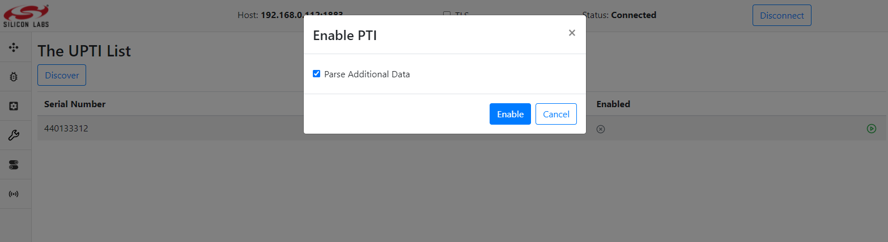
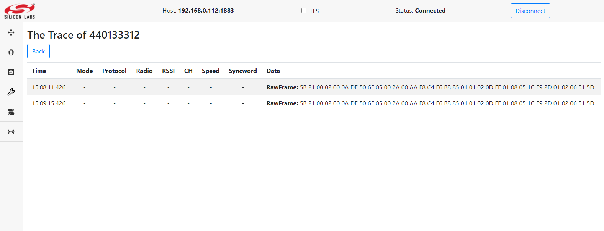

UPTI CAP User’s Guide
UPTI CAP is acronym for Unify Packet Trace Interface Capture
NOTE To make UPTI CAP work, Silicon Labs WSTK adapters needs a special PTI enabled firmware and must be connected to a LAN via Ethernet.
Description
The UPTI_CAP is an application to communicate with Silicon Labs WSTK adapters, to capture data from adapters debug channel and to publish captured data as MQTT messages.
The types of data depend from application loaded on wireless SoC and debug adapter (it can includes energy consumption data, network packet data or any other data available over the debug channel).
On startup, UPTI_CAP automatically discovers and publish lists of debug adapters
that are connected to the local subnet. You can also configure UPTI_CAP to discover
debug adapters on other subnets by providing the IP adressess list as the command line argument.
Adapters discovery can be started by publishing empty JSON to ucl/UPTICap/Discover topic.
At discovery phase, application sends UDP broadcast packets to port 19020 on all network interfaces (or/and to IP adressess list from command line arguments) and waits for answers.
Application decodes answers (if any), identifies serial numbers, IP adresses
and publishes list of supported devices to ucl/UPTICap/List topic.
At capturing phase, application establishes TCP connection to port 4095 of
adapter (debug channel), identifies debug messages in TCP stream, tries to parse
messages and publishes trace packages to ucl/UPTICap/<SerialNumber>/TracePackage topic.
Application allows to capture data from several adapters simultaneously. Capture/parse/publish task for each adapter runs as thread.
Capturing and publishing data from debug channel is disabled by default.
To start/stop capturing data and publishing trace packages an IoT Service MUST
publish control message to ucl/UPTICap/<SerialNumber>/Toggle topic.
Using DevGUI
Dev GUI application allows user to initiate adapters discovery, to start/stop trace packages capturing and visualize trace packages.
Enable/Disable PTI on the Protocol Controller To
EnableorDisablethe PTI functionality for controllers with NCP that support this, you need to toggleOn\Off PTIswitch to the desired position on theRFTelemetrypage . Note: An enabled pti produces a large number of messages sent via mqtt, so to prevent mqtt overload it is recommended to keep PTI disabled at all times while not in use. Note: This functionality is available when running the ZPC.Discovery PTI To discover the network and identify all PTIs, press
Discoverybutton on theUPTIpage. After some time, all PTIs will be available in a table with information aboutSerial Number,IP Addressand connection status .Enable/Disable data capture To
Togglecapturing data, pressEnableorDisablebutton. If youEnablecapturing, you can choose in the pop-up window whether you want to parse additional data or only capture raw data. 
View Trace Package To view a list of trace packages press the
View Tracebutton. You will see the table of captured trace packages with additional data:
or without additional data: 
MQTT Topics and messages format
ucl/UPTICap/Discover- topic to control PTI compatible devices discovery. Message payload - empty JSON.
{}
ucl/UPTICap/List- topic with the list of PTI compatible devices found in the network. Application publish list as retained message.
{
"$schema": "http://json-schema.org/draft-07/schema#",
"title": "PTI devices list",
"description": "PTI devices list",
"definitions": {
"ListEntry": {
"type": "object",
"properties": {
"PTIAddress": {
"description": "PTI device IP address",
"type": "string"
},
"SerialNumber": {
"description": "PTI device serial number",
"type": "string"
},
"Enabled": {
"description": "PTI device status",
"type": "boolean"
}
}
}
},
"type": "object",
"properties": {
"value": {
"type": "array",
"items": {
"$ref": "#/definitions/ListEntry"
}
}
}
}
Example:
{
"value": [
{
"PTIAddress": "192.168.0.112",
"SerialNumber": "1234567",
"Enabled": false
},
{
"PTIAddress": "192.168.0.122",
"SerialNumber": "7654321",
"Enabled": false
}
]
}
ucl/UPTICap/<SerialNumber>/Toggle- topic to control PTI coompatible device, whereSerialNumberis the serial number of the WSTK board.
{
"$schema": "http://json-schema.org/draft-07/schema#",
"title": "PTI Toggle",
"description": "PTI Toggle payload",
"type": "object",
"properties": {
"Enable": {
"description": "Enable/Disable PTI Tracing Service",
"type": "boolean"
},
"GetOTA": {
"description": "Enable/Disable parsing OTA",
"type": "boolean",
"default": false
},
"GetAdditionalData": {
"description": "Enable/Disable parsing AdditionalData",
"type": "boolean",
"default": false
}
},
"required": [
"Enable"
]
}
Example:
ucl/UPTICap/1234567/Toggle
{
"Enable": true,
"GetOTA": false,
"GetAdditionalData": true
}
ucl/UPTICap/<SerialNumber>/TracePackage- topic to publish traces from PTI compatible device, whereSerialNumberis the serial number of the WSTK board.
{
"$schema": "http://json-schema.org/draft-07/schema#",
"title": "PTI TracePackage",
"description": "PTI TracePackage payload",
"type": "object",
"properties": {
"TimeStamp": {
"description": "A timestamp encoded using RFC 3339",
"type": "string"
},
"RawFrame": {
"description": "Raw frame data",
"type": "array",
"items": {
"type": "number"
},
},
"OTA": {
"description": "Parsed OTA data ",
"type": "object",
"default": null
},
"AdditionalData": {
"description": "Parsed Additional Data",
"type": "object",
"default": null,
"properties": {
"Rssi": {
"description": "RSSI (Rx only)",
"type": "number",
"default": null
},
"Syncword": {
"description": "SYNCWORD (optionally included, currently only for BLE protocol (Least significant byte first)",
"type": "array",
"items": {
"type": "number"
},
"default": null
},
"RadioConfig": {
"description": "Depending on the protocol contains: Zigbee Modem Config Id, Z-Wave Region Id, BLE PHY Id (included only if non-zero)",
"type": "number",
"default": null
},
"Channel": {
"description": "Contains info about 'Channel Number'",
"type": "number"
},
"Mode": {
"description": "Contains info about 'Mode' Rx/Tx",
"type": "number"
},
"Protocol": {
"description": "Contains info about 'Protocol ID'",
"type": "number"
},
"Version": {
"description": "Contains info about 'Version'",
"type": "number"
},
"ErrorCode": {
"description": "Contains Error Code",
"type": "number"
},
"Payload": {
"description": "Raw Additional Data",
"type": "array",
"items": {
"type": "number"
},
"default": null
},
},
"required": [
"ErrorCode"
]
}
},
"required": [
"TimeStamp",
"RawFrame"
]
}
Example:
ucl/UPTICap/1234567/TracePackage
Without Additional Data
{
"TimeStamp":"2021-12-10T15:00:37.365671046+02:00",
"RawFrame":[
91,54,0,2,0,170,90,113,84,5,0,42,0,135,248,204,219,103,182,83,55,133,34,128,42,51,117,171,63,222,252,0,1,18,45,45,104,82,110,164,167,85,34,97,12,2,187,63,235,250,209,1,1,22,81,93
]
}
With Additional Data
{
"TimeStamp": "2021-12-10T15:07:51.426000339+02:00",
"AdditionalData": {
"Mode": "RxSuccess",
"Protocol": 6,
"RadioConfig": 1,
"Rssi": -5,
"Channel": 2,
"Speed": 0,
"Syncword": [],
"Version": 1,
"ErrorCode": 0,
"Payload": [
196,230,184,133,1,1,2,13,255,1,8,5,28
]
},
"RawFrame": [
91,33,0,2,0,10,222,80,110,5,0,42,0,170,248,196,230,184,133,1,1,2,13,255,1,8,5,28,249,45,1,2,6,81,93
]
}
Installation
For installing please refer to the general installation method in Getting started.
Running the UPTI CAP
Using Systemd Service
The best way to run the UPTI CAP is using the Systemd service that is installed with
the Debian installer. For more information, see the Unify Framework User guide.
Using Command Line
Alternatively, you can run the UPTICAP by executing uic-upti-cap.
You can configure the MQTT server, database path, through command line options.
For details about options, run uic-upti-cap --help command:
Make sure that you do not run the UPTICAP both as a service and using the command line.
pi@uic-upti-cap:~ $ service uic-upti-cap status
● uic-upti-cap.service - Unified IoT UPTI cap
Loaded: loaded (/lib/systemd/system/uic-upti-cap.service; enabled; vendor preset: enabled)
Active: active (running) since Thu 2021-11-04 11:38:32 EET; 17min ago
Main PID: 1506 (uic-upti-cap)
Tasks: 3 (limit: 4915)
CGroup: /system.slice/uic-upti-cap.service
└─1506 /usr/bin/uic-upti-cap
If the service is running, stop it using the following command before you run the application manually:
pi@unify:~ $ service uic-upti-cap stop